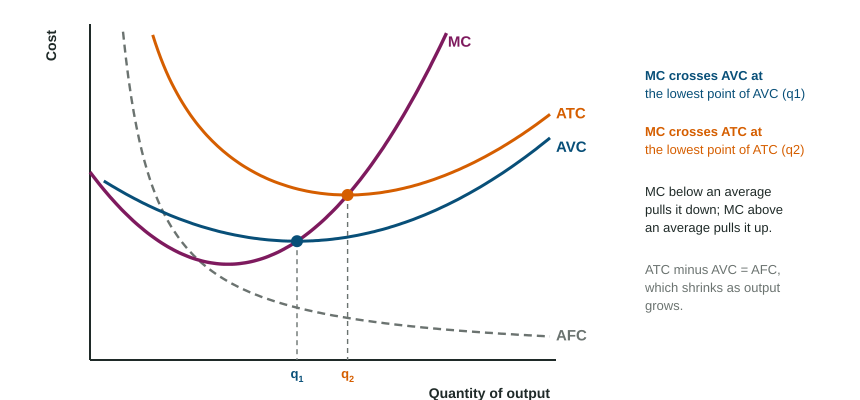

Short-Run Production Costs
Short-run costs are fixed (the same at every output, even zero) or variable (rising with output); total cost is their sum.
Part 1 · Hook
Why this matters
Part 2 · Before you start
What this builds on
Part 3 · Prerequisite check
Quick check before you start
1. Wages a firm pays its workers are
- an explicit cost
- an implicit cost
- a sunk cost
- a benefit
Show the answer
They are money actually paid out.
- Correct: an explicit cost:
- an implicit cost:
- a sunk cost:
- a benefit:
2. In the short run, as a firm adds workers to a fixed plant, the marginal product of labor eventually
- falls
- rises
- stays the same
- becomes the average product
Show the answer
That is diminishing marginal returns.
- Correct: falls:
- rises:
- stays the same:
- becomes the average product:
Part 4 · See it
See it first

Part 5 · Step by step
How it works, step by step
- The firm adds workers to a fixed plantthe marginal product of labor eventually falls (diminishing marginal returns)
- Each worker adds less outputeach extra unit takes more paid hours to make, so marginal cost rises
- Marginal cost rises above average variable cost and then above average total costit pulls each average up, so AVC and ATC turn upward
- MC pulls each average down while below it and up while above itMC crosses AVC and ATC at their lowest points
Part 6 · Key ideas
Key ideas
- Total fixed cost (TFC) is the same at every output, even zero. Total variable cost (TVC) rises with output. TC = TFC + TVC.
- Averages divide by output: AFC = TFC / Q, AVC = TVC / Q, ATC = TC / Q = AFC + AVC.
- Marginal cost: . Divide by the change in output.
- MC crosses AVC and ATC at their lowest points. A fixed cost moves ATC (and AFC) only; a variable cost moves MC, AVC and ATC.
Part 7 · Misconception
A common mistake
The wrong idea: Marginal cost is just the jump in total cost from one row of a table to the next.
What actually happens: Marginal cost is per unit: divide the change in total cost by the change in output. If cost rises by $70 when output rises by 10, MC is $7, not $70.
Part 8 · Check yourself
Check yourself
Exam-style questions. Anything you miss goes into your review queue.
Data
Wickhaven Candle Works: output and total cost
| Output (candles per day) | Total cost ($) |
|---|---|
| 0 | 100 |
| 10 | 180 |
| 20 | 240 |
| 30 | 290 |
| 40 | 360 |
| 50 | 450 |
| 60 | 560 |
1. Use the table. What is the marginal cost of a candle when output rises from 30 to 40 candles a day, in dollars?
Type a number. A four-function calculator is allowed, as on the exam.
Show the answer
Marginal cost is the change in total cost divided by the change in output:
- Answer: 7
2. Use the table. What is the average variable cost of 40 candles a day, in dollars?
Type a number. A four-function calculator is allowed, as on the exam.
Show the answer
Fixed cost is the cost at zero output, $100, so variable cost at 40 candles is and dollars.
- Answer: 6.5
3. Use the table. Over which range of output is marginal cost equal to average total cost, where average total cost is at its lowest?
- From 20 to 30 candles, where marginal cost is $5
- From 50 to 60 candles, where total cost is $560
- From 40 to 50 candles, where both are $9
- From 0 to 10 candles, where the firm starts producing
Show the answer
ATC is 18, 12, 9.67, 9, 9 and 9.33. MC from 40 to 50 candles is $9, equal to ATC, which is where ATC bottoms out: MC crosses ATC at its minimum.
- From 20 to 30 candles, where marginal cost is $5: MC of $5 is below ATC there ($12 and about $9.67), so ATC is still falling.
- From 50 to 60 candles, where total cost is $560: MC is $11 there, above ATC, so ATC is already rising.
- Correct: From 40 to 50 candles, where both are $9: Right: MC is (450 - 360) / 10 = 9, and ATC is 9 at both 40 and 50 candles.
- From 0 to 10 candles, where the firm starts producing: MC is $8 and ATC is $18 at 10 candles: MC is far below ATC.
4. Use the table. What is total fixed cost when the firm makes 60 candles a day?
- $100, the same as at zero output
- $560, the total cost at 60 candles
- $460, the cost of the added candles
- $600, six times the cost of 10 candles
Show the answer
Total fixed cost is the cost at zero output, $100, and it is the same at every output in the short run.
- Correct: $100, the same as at zero output: Right: fixed cost does not change with output.
- $560, the total cost at 60 candles: That is total cost, which includes variable cost.
- $460, the cost of the added candles: That is variable cost: 560 - 100.
- $600, six times the cost of 10 candles: Fixed cost is not multiplied by output; it stays at $100.
5. Mark the output at which average total cost is at its lowest.
Work on the graph (it needs JavaScript), then check.
Show the answer
ATC is lowest where MC crosses it: to the left MC is below ATC and pulls it down; to the right MC is above and pulls it up.
- Key: see the explanation
6. The city raises a lump-sum tax that every food truck pays once a year, whatever it sells. Shift the curve or curves that change for one food truck.
Work on the graph (it needs JavaScript), then check.
Show the answer
A lump-sum tax raises total fixed cost, so AFC and ATC rise at every output. It adds nothing to the cost of one more unit, so MC and AVC do not move.
- Key: average total cost shifts up
7. At a firm's current output, marginal cost is $8 and average total cost is $11. If the firm makes one more unit, average total cost will
- rise, because total cost rises
- stay at $11, because fixed cost has not changed
- fall, because the extra unit costs less than the current average
- rise to $19, the sum of the two costs
Show the answer
When MC is below ATC, ATC is falling; when MC is above ATC, ATC is rising. So MC crosses ATC at ATC's minimum.
- rise, because total cost rises: Total cost rises by $8, but that is less than the $11 average, so the average falls.
- stay at $11, because fixed cost has not changed: The average changes whenever the marginal unit differs from it.
- Correct: fall, because the extra unit costs less than the current average: Right: a unit below the average pulls the average down.
- rise to $19, the sum of the two costs: Marginal and average cost are not added; compare them instead.
Part 9 · Summary
Summary
Part 10 · Up next
What comes next
Part 11 · Connections